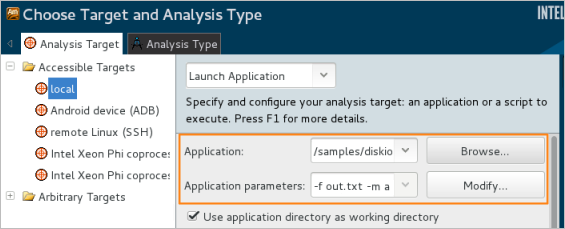
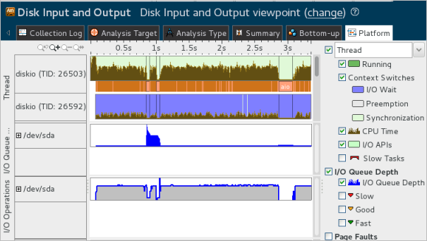

You identified that
writing the data synchronously to the user buffer and then directly to the I/O
device removes the CPU Time overhead but makes the application I/O bound. Try
running the sample application in a mode using two user buffers and
asynchronously submitting data to the disk.
You identified that
writing the data synchronously to the user buffer and then directly to the I/O
device removes the CPU Time overhead but makes the application I/O bound. Try
running the sample application in a mode using two user buffers and
asynchronously submitting data to the disk.
Configure a new data collection for the existing diskio project as follows:
Click the
 Configure
Project button on the toolbar.
Configure
Project button on the toolbar.
The Choose Target and Analysis Type window opens with the Analysis Target tab active.
In the Application parameters field, specify -f out.txt -m a, where a is the asynchronous user buffer mode.

Click the Choose Analysis button on the right.
The Analysis Type tab opens. The Disk Input and Output analysis is pre-selected.
Click the Start button on the right.
VTune Amplifier collects data and opens the result in the Disk Input and Output viewpoint with the Summary window active by default.
You see that the Elapsed Time of the diskio application in the asynchronous user buffer mode has decreased and is equal now to 3.360 seconds. The I/O Wait Time almost has not changed:

If you switch to the Platform window, you see two diskio threads where the first one is a user thread busy with the CPU activity and it has no I/O Waits anymore; and the second thread is a system thread used for I/O synchronization.

In the asynchronous mode, due to the usage of the two buffers filling the second buffer happens in parallel with writing the first buffer data to the disk. This workflow is optimal since it effectively uses both CPU and I/O resources and provides the fastest application execution.
Note
The screen shots and execution time data provided in this tutorial may differ from the data collected on your system. For example, if your disk is slow but your CPU is powerful, the sample workload provided for filling in the buffer may be insufficient and you will see almost no difference between the synchronous and asynchronous user buffer modes.
Recap
You ran the Disk Input and Output analysis for the sample application in the asynchronous user buffer mode and identified that in this mode the application demonstrates the best performance with no I/O Waits on the user thread and fastest execution time.